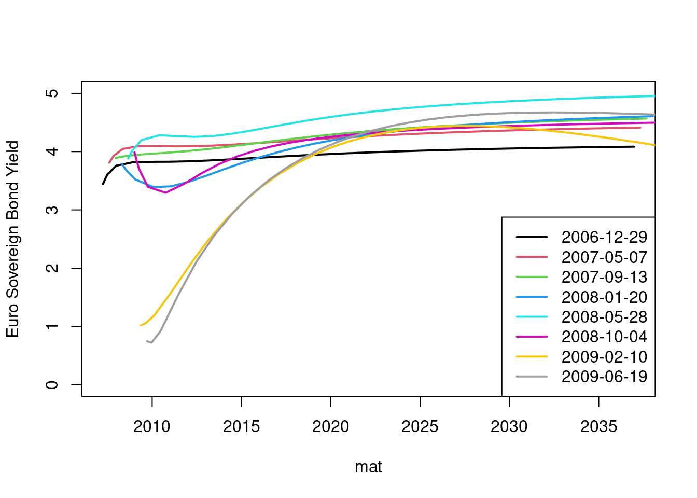
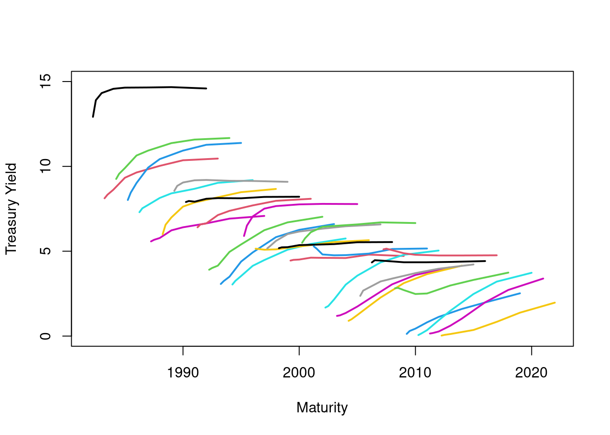
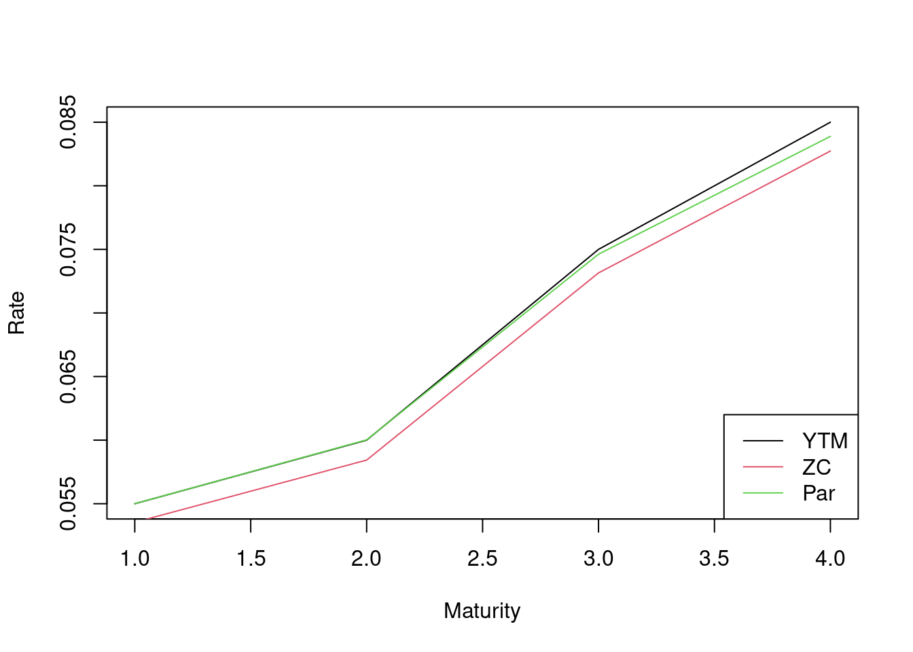

library(fBasics)
library(empfin)## Loading required package: fOptions## Loading required package: timeDate## Loading required package: timeSeries## Loading required package: fExoticOptions## Loading required package: fAsianOptions## Loading required package: fImport## Loading required package: RCurl## Loading required package: Hmisc## Loading required package: lattice## Loading required package: survival## Loading required package: Formula## Loading required package: ggplot2##
## Attaching package: 'Hmisc'## The following objects are masked from 'package:base':
##
## format.pval, units library(tufte)
data(LiborRates)
library(YieldCurve)## Loading required package: xts## Loading required package: zoo##
## Attaching package: 'zoo'## The following object is masked from 'package:timeSeries':
##
## time<-## The following objects are masked from 'package:base':
##
## as.Date, as.Date.numeric data(FedYieldCurve, package='YieldCurve')
data(ECBYieldCurve, package='YieldCurve')
data(LiborRates, package='empfin')The relationship between yield and maturity is called the “term structure of interest rate”. Since there are many ways to measure yield, there are also many types of term structures. The term structure of interest rate is important because, everything else being equal, maturity is the main determinant of yield. In addition, investors and economists believe that the shape of this curve may reflect the market’s expectation of future rates.
The term structure of interest rates can assume a variety of shapes, as illustrated by the following 2 examples.
Figure \[fig:zc-ecb\] displays a sample of yield curves, published by the European Central Bank (ECB). These curves represent the yield to maturity for AAA rated euro-zone government bonds. We show quarterly data from December 2006 to June 2009. Three patterns are visible:
an almost flat curve (August 2007)
an inverted curve at the short end, and upward sloping at the long end (January 2008)
an evenly upward-sloping curve (December 2006, June 2009)
The data is extracted from the package, data set :
tau <- c(3/12, 6/12, 1:30)
d1 <- as.Date('2006-12-29')
d2 <- as.Date('2009-07-24')
nbObs <- dim(ECBYieldCurve)[1]
dtObs <- seq(d1, d2, length.out=nbObs)
indx <- seq(1, nbObs, 90)
YC <- ECBYieldCurve[indx,]
dtObs <- dtObs[indx]
nbSample <- length(indx)The plot is generated by:
mat = dtObs[1] + (tau *365)
plot(mat, YC[1,],type='l', ylim=c(0,5), ylab='Euro Sovereign Bond Yield', col=1, lwd=2)
for(i in seq(2,nbSample)) {
mat = dtObs[i] + (tau *365)
lines(mat, YC[i,],type='l', col=i, lwd=2)
}
legend("bottomright",legend=as.character(dtObs), col=seq(1,nbSample),lty=1, lwd=2)
Figure \[fig:zc-fed\] presents a similar plot for the US Treasury yield, over the period 1982-2009. This illustrates the wide range of slope that a yield curve can assume over a long period of time. The plot uses the data set , and is obtained as follows:
tau <- c(3/12, 6/12, 1, 2, 3, 5, 7, 10)
dtObs <- as.Date(timeSequence(from='1982-01-01', to='2012-11-30', by='month'))
nbObs <- dim(FedYieldCurve)[1]
indx <- seq(1, nbObs, 12)
# monthly sample
YC <- FedYieldCurve[indx,]
dtObs <- dtObs[indx]
nbSample <- length(indx)
mat = dtObs[1] + (tau*365)
plot(mat, YC[1,],type='l', ylim=c(0,15), xlim=c(dtObs[1], dtObs[nbSample]+10*365), col=1, lwd=2, ylab='Treasury Yield', xlab='Maturity')
for(i in seq(2,nbSample)) {
mat = dtObs[i] + (tau *365)
lines(mat, YC[i,],type='l', col=i, lwd=2)
}
In a stylized manner, the calculation of a bond zero-coupon yield curve is straight-forward. Assume a set of bonds with cash flows \(F_{i,j}\) occurring at regular intervals, where \(i\) is the index of the bond and \(j\) the index of the cash flow date. We look for an interest rate function \(z(t)\) that prices the bonds exactly:
\[P_i = \sum_{j=1}^{n_i} F_{i,j} e^{-z(t_j)t_j}\]
The function \(z(t)\) is called the continuously compounded zero-coupon yield curve, or “continuous zero curve” in short.
How to perform the calculation is best explained with an example. Assume that we observe 4 bonds, as summarized in Table \[tab:zc-bonds\].
| Maturity | Coupon (%) | Bond Yield (%) |
|---|---|---|
| 1 | 9 | 5.5 |
| 2 | 7 | 6.0 |
| 3 | 5 | 7.5 |
| 4 | 4 | 8.5 |
Let \(y_i\) be the bond yield for bond \(i\) maturing in \(i\) years, and \(P_i\) the corresponding present value.
y <- c(5.5, 6.0, 7.5, 8.5)/100
c <- c(9,7,5,4)/100
P <- sapply(seq(4), function(i) SimpleBondPrice(c[i], i, yield=y[i]))
z <- rep(0,4)
r <- rep(0,4)The zero-coupon rates \(z_i\) for each maturity are computed recursively, one maturity at a time. The one year zero-rate is obtained by converting the bond yield into a continuously compounded rate:
\[e^{-z_1} = \frac{1}{(1+y_1)}\]
or,
\[z_1 = \ln(1+y_1)\]
which gives \(z_1 = 5.35\%\).
The zero coupon rate for year \(i\), with the rates up to year \(i-1\) assumed known, is obtained by solving for \(z_i\):
\[P_i = 100 \left( \sum_{j=1}^{i-1} c e^{-j z_j} + (1+c)e^{-i z_i} \right)\]
which yields:
\[z_i = -\frac{1}{i} \log \left( \frac{1}{1+c} \left( \frac{P_i}{100} - c \sum_{j=1}^{i-1} e^{-j z_j} \right) \right)\]
This recursive calculation is performed by the function :
ZCRate <- function(c, z, i) {
# compute the ZC rate for maturity i, given the zero-coupon rates
# for prior maturities
zc <- -(1/i)*log( 1/(1+c[i]) * ( P[i]/100 - c[i] * sum(exp(-seq(i-1)*z[1:(i-1)]))))
zc
}
for(i in seq(2,4)) {
z[i] <- ZCRate(c, z, i)
}A third term structure of interest is the par yield curve. For a given maturity, the par yield is the coupon rate of a bond priced at par (i.e. priced at \(100\%\)). Formally, given a zero-coupon curve, the par yield \(r_i\) for maturity \(i\) is such that:
\[1 = r_i \sum_{j=1}^{i} e^{-j z_j} + e^{-i z_i}\]
Back to our example, the par yields are computed by the following function, noting that the one year par rate is by definition the corresponding bond yield:
ParRate <- function(i) {
# compute the par rate for maturity i, given the zero-coupon rates for all maturities
r <- (1-exp(-i*z[i])) / sum(exp(-seq(i)*z[1:i]))
r
}
r[1] <- y[1]
for(i in seq(2,4)) {
r[i] <- ParRate(i)
}Figure \[fig:zc-11\] displays the bond yield curve and the corresponding zero-coupon curve and par curves.

In practice, this simple method is not realistic for several reasons:
In most markets, we will not find a set a bonds with identical anniversary dates,
the method outlined above only provides values of \(z(t)\) at maturity dates corresponding to the cash flow dates. An interpolation method is needed to obtain \(z(t)\) at arbitrary maturities, and finally
it does not account for the fact that some bonds may trade at a premium or discount: for example, a bond with a small outstanding amount will often trade at a discount, while the current 10 year benchmark bond will trade at a premium.
If we insist on a zero-coupon curve that prices exactly every bond in the sample, we will get a unnatural shape for the zero curve, and even more so for the forward rates.
The alternative is to specify a functional form (sufficiently flexible) for the zero-coupon curve, and to estimate its parameters by minimizing the pricing error over a set of bonds.
Since the term structure of interest rate can equivalently be represented in terms of spot rates, forward rates or discount factors, one has three choices for specifying the functional form of the term structure.
A popular method is to model the instantaneous forward rate, \(f(t)\). Integrating this function gives the zero-coupon rate. Nelson and Siegel (1987Nelson, C R, and A F Siegel. 1987. “Parsimonious Modeling of Yield Curves.” Journal of Business 60: 473–90.) introduced the following model for the instantaneous forward rate:
\[f(t) = \beta_0 + \beta_1 e^{-\frac{t}{\tau_1}} + \beta_2 \frac{t}{\tau_1} e^{-\frac{t}{\tau_1}}\]
Integrating \(f(t)\), the corresponding zero-coupon rates are given by:
\[z(t) = \beta_0 + \beta_1 \frac{1-e^{-\frac{t}{\tau_1}}}{\frac{t}{\tau_1}} \\ + \beta_2 \left( \frac{1-e^{-\frac{t}{\tau_1}}}{\frac{t}{\tau_1}} - e^{-\frac{t}{\tau_1}} \right)\]
Svensson (1994Svensson, Lars E O. 1994. “Estimating and Interpreting Forward Interest Rates: Sweden 1992-1994.” IMF Working Paper 94/114.) extended this model with 2 additional parameters, defining the instantaneous forward rate as:
\[f(t) = \beta_0 + \beta_1 e^{-\frac{t}{\tau_1}} + \beta_2 \frac{t}{\tau_1} e^{-\frac{t}{\tau_1}} + \beta_3 \frac{t}{\tau_2} e^{-\frac{t}{\tau_2}}\]
The following script, taken from the package, illustrates the fitting of the Nelson-Siegel and Svensson models to US Treasury yields.
# maturities in months of FedYieldCurve data set
tau <- c(3, 6, 12, 24, 36, 60, 84, 120)
# parameter estimation
Parameters.NS <- Nelson.Siegel( rate=FedYieldCurve[5,], maturity=tau)
Parameters.S <- Svensson(rate=FedYieldCurve[5,], maturity=tau)
# sample the fitted curves
tau.sim <- seq(1,120,2)
y.NS <- NSrates(Parameters.NS,tau.sim)
y.S <- Srates(Parameters.S, tau.sim, whichRate='Spot')Figure \[fig:zc-nss\] shows a comparison of the two fitted spot curves.